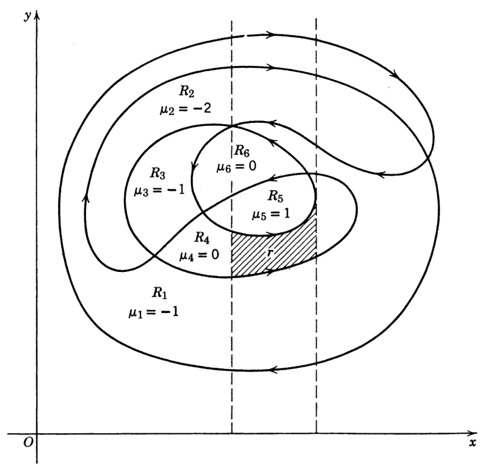
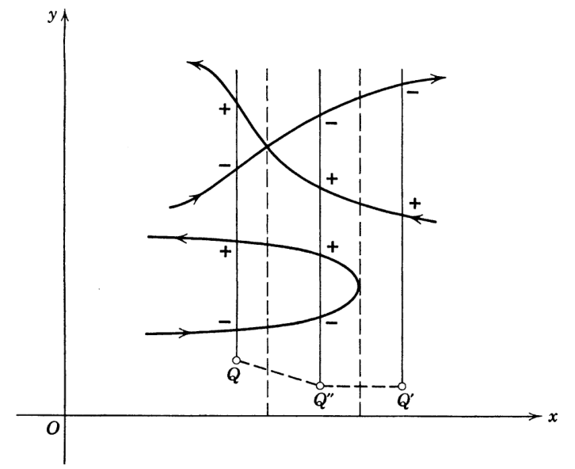

前面用积分 A = − ∫ α β y ( t ) x ˙ ( t ) d t A=-\int_\alpha^\beta y(t)\dot x(t)\,dt A = − ∫ α β y ( t ) x ˙ ( t ) d t x = x ( t ) , y = y ( t ) x=x(t),\ y=y(t) x = x ( t ) , y = y ( t ) α ≤ t ≤ β \alpha\le t\le\beta α ≤ t ≤ β A A A A A A
设曲线 C C C x = x ( t ) , y = y ( t ) x=x(t),\ y=y(t) x = x ( t ) , y = y ( t ) R 1 , R 2 , … R_1,R_2,\ldots R 1 , R 2 , … x ˙ 2 + y ˙ 2 ≠ 0 \dot x^2+\dot y^2\ne0 x ˙ 2 + y ˙ 2 = 0 x = constant x=\text{constant} x = constant
在每个区域 R i R_i R i 指标 μ i \mu_i μ i R i R_i R i Q Q Q Q Q Q y y y t t t C C C μ i \mu_i μ i μ = + 1 \mu=+1 μ = + 1 R 1 , … , R 6 R_1,\ldots,R_6 R 1 , … , R 6 μ 1 = − 1 , μ 2 = − 2 , μ 3 = − 1 , μ 4 = 0 , μ 5 = 1 , μ 6 = 0 \mu_1=-1,\ \mu_2=-2,\ \mu_3=-1,\ \mu_4=0,\ \mu_5=1,\ \mu_6=0 μ 1 = − 1 , μ 2 = − 2 , μ 3 = − 1 , μ 4 = 0 , μ 5 = 1 , μ 6 = 0

图 A.7 有向闭曲线分出的各区及其指标 这个数只依赖于区域 R i R_i R i Q Q Q R i R_i R i Q ′ Q' Q ′ R i R_i R i Q , Q ′ Q,Q' Q , Q ′ Q Q Q Q ′ Q' Q ′ A , B , … , H A,B,\ldots,H A , B , … , H F F F F A , F B , … , F H FA,FB,\ldots,FH F A , FB , … , F H Q Q Q Q ′ Q' Q ′ μ i \mu_i μ i

图 A.8 指标在同一连通区域内不变 特别地，若曲线没有自交，其内部只有一个区域 R R R + 1 +1 + 1 − 1 -1 − 1 P P P R R R P P P Q Q Q Q Q Q μ = + 1 \mu=+1 μ = + 1 μ = − 1 \mu=-1 μ = − 1 R R R A A A R i R_i R i
定理 − ∫ α β y x ˙ d t -\int_\alpha^\beta y\dot x\,dt − ∫ α β y x ˙ d t R i R_i R i R i R_i R i μ i \mu_i μ i
− ∫ α β y x ˙ d t = ∑ i μ i ∣ area R i ∣ .
-\int_\alpha^\beta y\dot x\,dt=\sum_i\mu_i\,|\operatorname{area}R_i|.
− ∫ α β y x ˙ d t = i ∑ μ i ∣ area R i ∣. 证明 可假定整条曲线位于 x x x y y y A A A R i R_i R i r r r y = y ( x ) y=y(x) y = y ( x ) − ∫ y x ˙ d t = − ∫ y d x -\int y\dot x\,dt=-\int y\,dx − ∫ y x ˙ d t = − ∫ y d x x x x r r r r r r + 1 +1 + 1 − 1 -1 − 1 μ i \mu_i μ i R i R_i R i R i R_i R i μ i \mu_i μ i ∑ i μ i ∣ area R i ∣ \sum_i\mu_i|\operatorname{area}R_i| ∑ i μ i ∣ area R i ∣ μ \mu μ
上面对 μ i \mu_i μ i R i R_i R i μ i \mu_i μ i t t t α \alpha α β \beta β R i R_i R i Q i Q_i Q i ν i \nu_i ν i
仍设 C C C x = x ( t ) , y = y ( t ) x=x(t),\ y=y(t) x = x ( t ) , y = y ( t ) α ≤ t ≤ β \alpha\le t\le\beta α ≤ t ≤ β C C C Q = ( ξ , η ) Q=(\xi,\eta) Q = ( ξ , η ) Q Q Q r , θ r,\theta r , θ cos θ = ( x − ξ ) / r , sin θ = ( y − η ) / r \cos\theta=(x-\xi)/r,\ \sin\theta=(y-\eta)/r cos θ = ( x − ξ ) / r , sin θ = ( y − η ) / r 2 π 2\pi 2 π θ ( t ) \theta(t) θ ( t ) C C C t t t t = α t=\alpha t = α θ 0 \theta_0 θ 0 t t t t = β t=\beta t = β θ ( β ) = θ 0 + 2 ν π \theta(\beta)=\theta_0+2\nu\pi θ ( β ) = θ 0 + 2 ν π ν \nu ν
ν = 1 2 π [ θ ( β ) − θ ( α ) ] = 1 2 π ∫ α β d θ d t d t = 1 2 π ∫ C d θ
\nu=\frac1{2\pi}[\theta(\beta)-\theta(\alpha)]
=\frac1{2\pi}\int_\alpha^\beta\frac{d\theta}{dt}\,dt
=\frac1{2\pi}\int_C d\theta
ν = 2 π 1 [ θ ( β ) − θ ( α )] = 2 π 1 ∫ α β d t d θ d t = 2 π 1 ∫ C d θ 就是有向曲线 C C C Q Q Q
当且仅当 ( 1 / 2 π ) [ θ ( t ) − π / 2 ] (1/2\pi)[\theta(t)-\pi/2] ( 1/2 π ) [ θ ( t ) − π /2 ] n n n Q Q Q n n n n n n t t t σ n \sigma_n σ n d θ / d t > 0 d\theta/dt>0 d θ / d t > 0 τ n \tau_n τ n d θ / d t < 0 d\theta/dt<0 d θ / d t < 0 Q Q Q μ = ∑ n σ n − ∑ n τ n = ∑ n ( σ n − τ n ) \mu=\sum_n\sigma_n-\sum_n\tau_n=\sum_n(\sigma_n-\tau_n) μ = ∑ n σ n − ∑ n τ n = ∑ n ( σ n − τ n ) σ n − τ n \sigma_n-\tau_n σ n − τ n 1 , 0 , − 1 1,0,-1 1 , 0 , − 1 θ , t \theta,t θ , t θ ( t ) \theta(t) θ ( t ) θ = π / 2 + 2 n π \theta=\pi/2+2n\pi θ = π /2 + 2 nπ π / 2 + 2 n π \pi/2+2n\pi π /2 + 2 nπ θ ( α ) \theta(\alpha) θ ( α ) θ ( β ) \theta(\beta) θ ( β ) σ n − τ n = sign [ θ ( β ) − θ ( α ) ] \sigma_n-\tau_n=\operatorname{sign}[\theta(\beta)-\theta(\alpha)] σ n − τ n = sign [ θ ( β ) − θ ( α )] μ \mu μ π / 2 + 2 n π \pi/2+2n\pi π /2 + 2 nπ θ ( β ) − θ ( α ) \theta(\beta)-\theta(\alpha) θ ( β ) − θ ( α ) μ = ν \mu=\nu μ = ν
由 θ = arctan [ ( y − η ) / ( x − ξ ) ] \theta=\arctan[(y-\eta)/(x-\xi)] θ = arctan [( y − η ) / ( x − ξ )]
d θ d t = y ˙ ( x − ξ ) − x ˙ ( y − η ) ( x − ξ ) 2 + ( y − η ) 2 .
\frac{d\theta}{dt}=\frac{\dot y(x-\xi)-\dot x(y-\eta)}{(x-\xi)^2+(y-\eta)^2}.
d t d θ = ( x − ξ ) 2 + ( y − η ) 2 y ˙ ( x − ξ ) − x ˙ ( y − η ) . 这就得到有向闭曲线 C C C ( ξ , η ) (\xi,\eta) ( ξ , η )
μ = 1 2 π ∫ α β y ˙ ( x − ξ ) − x ˙ ( y − η ) ( x − ξ ) 2 + ( y − η ) 2 d t .
\mu=\frac1{2\pi}\int_\alpha^\beta\frac{\dot y(x-\xi)-\dot x(y-\eta)}{(x-\xi)^2+(y-\eta)^2}\,dt.
μ = 2 π 1 ∫ α β ( x − ξ ) 2 + ( y − η ) 2 y ˙ ( x − ξ ) − x ˙ ( y − η ) d t . 不显含参数 t t t
μ = 1 2 π ∫ C ( x − ξ ) d y − ( y − η ) d x ( x − ξ ) 2 + ( y − η ) 2 .
\mu=\frac1{2\pi}\int_C\frac{(x-\xi)\,dy-(y-\eta)\,dx}{(x-\xi)^2+(y-\eta)^2}.
μ = 2 π 1 ∫ C ( x − ξ ) 2 + ( y − η ) 2 ( x − ξ ) d y − ( y − η ) d x . 这些结果的显著之处在于，描述点 Q Q Q C C C μ \mu μ ν \nu ν C C C
译者注 沿曲线连续跟踪极角，转过一整圈后应记作增加 2 π 2\pi 2 π